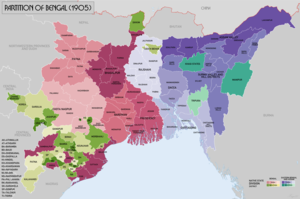
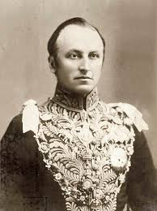

The decision to effect the Partition of Bengal was announced on 7 July 1905 by the Viceroy of India, Lord Curzon. The partition took place on 16 October 1905 and separated the largely Muslim eastern areas from the largely Hindu western areas. The Hindus of West Bengal who dominated Bengal's business and rural life complained that the division would make them a minority in a province that would incorporate the province of Bihar and Orissa.Hindus were outraged at what they recognised as a "divide and rule" policy, where the colonisers turned the native population against itself in order to rule, even though Curzon stressed it would produce administrative efficiency. The partition animated the Hindus and led the Muslims to form their own national organization on communal lines. Bengal was reunited by Lord Hardinage in 1911 in an effort to appease Bengali sentiment. It was reunited for the following reasons: 1. Swadeshi movement riots protested against it. Hindus thought the east bengal would have their own courts and policies.
Widespread agitation ensued in the streets and in the press, and the Congress advocated boycotting British products under the banner of swadeshi, or indigenous industries. A growing movement emerged, focussing on indigenous Indian industries, finance and education, which saw the founding of National Council of Education, birth of Indian financial institutions and banks, as well as an interest in Indian culture and achievements in science and literature. Hindus showed unity by tying Rakhi on each other's wrists and observing Arandhan (not cooking any food). During this time, Bengali Hindu nationalists like Sri Aurobindo, Bhupendranath Datta, and Bipin Chandra Pal began writing virulent newspaper articles challenging legitimacy of British rule in India in publications such as Jugantar and Sandhya, and were charged with sedition. Brahmabhandav Upadhyay, a Hindu newspaper editor who helped Tagore establish his school at Shantiniketan, was imprisoned and the first to die in British custody in the twentieth century struggle for self-rule.